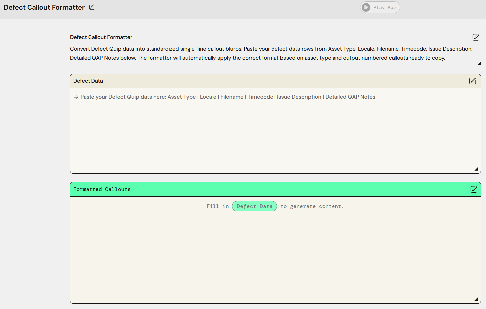
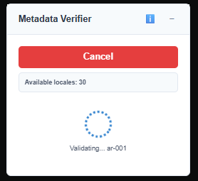
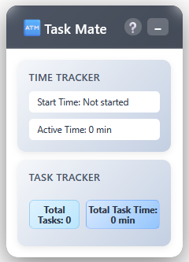
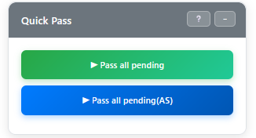

Content Operations Specialist | Quality Assurance Expert | AI Innovator
Transforming Content Operations Through Automation & Generative AI
Results-driven Operations Specialist with 2+ years of expertise in Content Operations, Quality Assurance, and Process Optimization within media workflows. Proficient in workflow coordination, metadata management, and implementing automation solutions that drive efficiency and accuracy. Proven track record in team training, productivity tracking, and cross-functional collaboration to ensure seamless content lifecycle management and operational excellence.
Core Expertise: Content Operations | Quality Assurance | Process Optimization | Team Leadership | Workflow Automation | Generative AI Integration
Challenge: Manual formatting of quality assurance defects was time-consuming and prone to inconsistencies, slowing down the QA feedback loop.
Solution: Developed an intelligent defect formatting tool that automatically structures QA findings into standardized callouts, grouping identical issues across multiple locales and generating professional defect reports.

AI-Powered Defect Formatter Interface
Technologies: Generative AI, Web Development (HTML/CSS/JavaScript), Data Processing
Key Features:
Challenge: Manual metadata validation was error-prone and couldn't scale with increasing content volume, leading to quality issues and launch delays.
Solution: Built a comprehensive metadata validation system that performs content-type-aware checks across multiple data points, ensuring metadata accuracy before content publication.

Metadata Validator Dashboard
Technologies: Python, Data Validation Logic, Web Interface, CMS Integration
Validation Capabilities:
Challenge: Lack of visibility into team productivity and time allocation made it difficult to optimize workflows and identify improvement opportunities.
Solution: Created an intuitive task and time tracking system that provides real-time insights into team productivity, task completion rates, and time utilization patterns.

Task Mate - Real-time Productivity Dashboard
Technologies: Web Development, Data Analytics, Dashboard Design, Local Storage
Features:
Challenge: QC operators spent 1-3 minutes per title manually selecting "Pass" for multiple quality checks in Quality Central, creating a bottleneck in the content review workflow and limiting daily throughput.
Solution: Developed a browser automation tool using Tampermonkey that automatically passes all pending quality checks with one click, while maintaining manual control over final submission for quality assurance.

Quick Pass - Real-time Automation Dashboard
Technologies: JavaScript, Tampermonkey, Browser Automation, DOM Manipulation
Key Features:
Deployment & Adoption:
I believe in combining operational expertise with technological innovation to drive efficiency and quality. My approach focuses on: